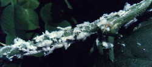
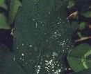
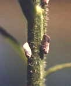
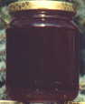

La melata è la sostanza prodotta dal metabolismo degli afidi, della metcalfa ed altri piccoli insetti, che suggono la linfa dalle foglie delle piante. Le api raccolgono questa sostanza zuccherina e la elaborano trasformandola in miele di melata.
Il sapore di questo miele è un pò meno dolce rispetto ai mieli di nettare ed è caratteristico. Il colore è molto scuro, a volte tendente al nero. E' molto denso e non cristallizza.
Questo miele si caratterizza per la presenza di sali minerali in quantità maggiori rispetto ad altri tipi di mieli. E' apprezzato da chi svolge attività sportiva.
